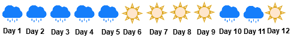

Towards an Intuitive Understanding of Hidden Markov Model
Ever wondered how the voice assistant in your phone works? or how does speech tagging in sentences takes place? or how your smartwatch or smart wristband counts the number of steps you have taken? Each of these are examples of time-series machine learning. Hidden Markov Model (HMM) are a popular machine learning model for time-series data and have been used for various time series applications. We look at intuitive and visual ways of understanding how these powerful algorithms work. The Hidden Markov Model is based on the idea that most things in the physical world are clearly dependent on prior outcomes, such as our life expectancy or the weather today.
Sequential Model
Imagine that it has been raining since the past few days and someone asks you - “How likely is it that it will rain tomorrow”? What is your guess? You might say that, "Given that it has been raining since the last few days, I think it will rain tomorrow". The premise behind your answer may be that once it rains, it usually rains for a few days in succession, and there is a seasonal and continuity phenomenon attached with rainfall. We might have a sequence of events as shown below.

If we simply use a classification model which does not take into account the notion of time, then we are effectively saying that today's weather will be independent of the weather of the past few days. Thus, effectively we are assuming that our data is independent and identically distributed (IID).
Instead if we use a system that utilizes the time series component, we can build a model that considers the past days weather for predicting today's weather.
The Markov Model
A Markov Model considers that the future data (or predicted output) is dependent on the past and the present. When the future prediction depends only on the present then we define the Markov Model as a first order markov chain.
Mathematically, we define the conditional probability of future prediction \(x_{t+1}\), given the past observation \(x_1, x_2 \dots x_{t-1}\) and the present \(x_t\) as \(P(x_{t+1}\vert x_1, x_2, \ldots x_t) = P(x_{t+1} \vert x_t)\)
Joint Probability is calculated using the formula specified below \(P(x_{t+1} \vert x_t, x_{t-1}) = P(x_1)*P(x_2 \vert x_1) P(x_3 \vert x_2) \dots P(x_T \vert x_{T-1})\)
Similarly, a second order Markov chain is the one where the conditional probability of future prediction for observation of \(x_{t+1}\), is dependent on the present \(x_t\) and one timestamp on the past \(x_{t-1}\). Thus, we can represent the joint probability distribution of second order markov chain can be written as \(P(x_{t+1}\vert x_1, x_2, \ldots x_t) = P(x_{t+1} \vert x_t, x_{t-1})\).
Joint Probability is calculated using the formula specified below \(P(x_{t+1} \vert x_t, x_{t-1}) = P(x_1)*P(x_2 \vert x_1) \prod_{t=3}^{t=T} P(x_t \vert x_{t-1},x_{t-2})\)
Here, \(t=T\) represents the last observations made in the time series.
Parameters of First Order Markov Chain
To estimate the joint probability in the first order markov chain, we need to know \(k(K-1)\) parameters (assuming that there are a total of \(K\) states in the chain). These parameters are the transition probability \(P(x_j \vert x_i)\) of moving from one state to another. There are \(K^2\) possible transitions from \(i\) to \(j\) with \(1 \leq i, j \leq K\). Since \(\sum{}{} P(x_i \vert x_j) = 1\), thus we need to estimate \(k(K-1)\) only. Another parameter we are concerned about is the prior probability (\(P(x_1)\)) which can also be stated as the the probability of starting from one of the \(k\) possible states at the first timestamp. Thus, parameters \(\theta\) can be given as \(\theta = \{\pi, A\}\), where \(\pi\) is the prior probability and \(A\) is the transition matrix.
Transition Matrix
Let us assume that \(x_t\) can take one of the \(k\) possible states, the probability of going from state \(j\) to state \(k\) is given by \(P(x_t = k \vert x_{t-1}=j)\) where \(j,k = \{1,2 \ldots k\}\). The finite state diagram can represent a two state transition matrix as shown below.
Prior Probability
Prior probability is simply the probability of the very first observation and is represented by \(\pi\). Thus, \(\pi_k = P(z_1 = k)\), here we are using \(z_x\) to represent the state \(x\).
Interactive Example of Markov Chain
| Pi | Coin |
|---|---|
| Fair | 0.5 |
| Biased | 0.5 |
| Transition Matrix | Fair | Biased |
|---|---|---|
| Fair | 0.5 |
0.5 |
| Biased | 0.5 |
0.5 |
Text Generation using Markov Chains
What is hidden in a hidden markov model?
We will understand this hidden component by taking an example of two coins. One of the coin is fair with the same probability of head and tail i.e. 0.5. The other coin is biased towards head by a probability of 0.7. The sequence of observation which we observe is \(\{H,T \ldots\}\) but what we do not know is which coin was responsible for the observation at a timestamp \(t\). We will use the notation \(x_t\) to represent the observations (which in this case is Head or Tail), \(Z_t\) to represent the states (which in this case is Fair or Biased coin).
See the diagram below. It is worth noting that there is a link between the states but not between the observations.

Hidden Markov Model Parameters
In this section we summarize the parameters we have observed so far.
- Transition Matrix A: The conditional probability \(A_{jk}\) of moving to state \(k\) from state \(j\) is given by: \(A_{jk} = P(z_t=k \vert z_{t-1}=j)\)
- Prior Probability \(\pi\): The probability of starting from one of the \(k\) available state on the first timestamp i.e. \(t=1\) given by \(\pi_k = P(z_1=k)\)
- Emission Probability: The conditional probability of observing a discrete or continuous value \(x\) from a state \(z\) given the transition matrix and the prior probability is given as \(\phi_t = P(x_t \vert z_t, A, \pi)\)
| Pi | Coin |
|---|---|
| Fair | 0.5 |
| Biased | 0.5 |
| A | Fair | Biased |
|---|---|---|
| Fair | 0.5 |
0.5 |
| Biased | 0.5 |
0.5 |
| Phi | Head | Tails |
|---|---|---|
| Fair | 0.5 |
0.5 |
| Biased | 0.5 |
0.5 |
Hidden Markov Model Sampling
The objective of Hidden Markov Model Sampling is to generate a sequence of observation \(\{x_1, x_2 \ldots x_n\}\) and a sequence of states \(\{z_1, z_2 \ldots z_n\}\) given the parameters, prior probability \(\pi\), transition matrix \(A\) and emission matrix \(\phi\). The algorithm for HMM sampling is as stated below.
- Choose \(z_1\) as per \(\pi\)
- Sample \(x_1\) using \(\phi\) and \(z_1\)
- For each value of \(n = 2:N\)
- Sample \(Z_n\) from \(Z_{n-1}\) using \(A\) and \(Z_{n-1}\)
- Sample \(x_n\) from \(z_n\) using \(\phi\) and \(z_n\)
The next problem in HMM is the likelihood of the evidence. The evidence is the sequence of observation that we have i.e. \(\{x_1, x_2 \ldots x_T\}\), \(T\) here represents the last observation at the end of time \(T\).
Forward Algorithm
Forward procedure is defined as the joint probability of being in state \(i\) at time \(t\) and observation \(x_{1:t}\). Mathematically, \(\alpha_t(i) = P(x_{1:t},z_t=i)\). Building upon the two state (Bias and Fair) coin example that we saw before, we see that:
| Pi | Coin |
|---|---|
| Fair | 0.4 |
| Biased | 0.6 |
| A | Fair | Biased |
|---|---|---|
| Fair | 0.9 |
0.1 |
| Biased | 0.1 |
0.9 |
| Phi | Head | Tails |
|---|---|---|
| Fair | 0.5 |
0.5 |
| Biased | 0.7 |
0.3 |
\( \alpha_1(F) = P(x_{1},z_1=F) \) = \(\pi_{F}\) X \(P(x_1=H \vert z_1=F)\) = 0.4 X 0.5 = 0.20
\( \alpha_1(B) = P(x_{1},z_1=B) \) = \(\pi_{B}\) X \(P(x_1=H \vert z_1=B)\) = 0.6 X 0.7 = 0.42
Viterbi Algorithm
Initialization
FOR \(i\) in 1 to \(K\):
\(\delta_{1}(i) = \pi_{i} * \phi_{1}(x_{1})\)
\(\psi_{1}(i) = 0\)
Recursion
FOR \(t\) in 2 to \(T\):
FOR \(j\) in 1 to \(K\):
\(\delta_{t}(j) = \Bigg( \underset{ i \in 1 \dots K} \arg\max \bigg( \delta_{t-1}(i) * A_{ij} \bigg) \Bigg) * \phi_{j}(x_{t})\)
\(\psi_{t}(j) = \underset{ i \in 1 \dots K} \arg\max \bigg( \delta_{t-1}(i) * A_{ij} \bigg) \)
| \( \delta \) | Fair | Biased |
|---|
| \( \psi \) | Fair | Biased |
|---|